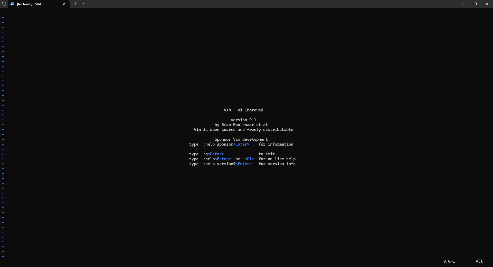

Egy gyors mondatban a Vim eredetijéről, a vi-ről: A "vi" az egy, eredetileg a Unix operációs rendszerre fejlesztett (1976), képernyő orientált szövegszerkesztő. Ennek a továbbfejlesztett változata a Vim (vi improved) (1991).
Ha nagyon leegyszerűsítve akarnék fogalmazni, azt mondanám, hogy ez a parancssor jegyzettömbje. Kissé elavult, vannak modernebb és jobb lehetőségeink, de mind a mai napig sokan használják, mivel (szinte) biztos lehetsz benne, hogy van.
A Vim legfontosabb jellegzetessége, hogy a szerkesztés kizárólag billentyűzet használatával történik. Mozogni akarsz a szövegedben? Billentyűzet. Beleírni szeretnél? Billentyűzet. Bármilyen szinten hozzányúlnál a kis dokumentumodhoz? Billentyűzet!
Röviden: parancssor használat közben ez a legkézenfekvőbb szövegszerkesztési mód; segíti a gyorsabb kódírást
Kicsit hosszabban:
A Vim-ben használt parancsok és az azok által megtanult "alapelvek" (banális példa, de pl. a mentés fontossága) végig vissza fognak köszönni tanulmányaink során. Ezért érdemes őket most,
ilyen "kezdetleges" változatukban megtanulni, mivel a továbbiak ezek térnek vissza újra és újra.
Praktikai szempontból: a szerverekkel (nem csak a szamrend.inf.elte.hu esetében) általában parancssor segítségével kommunikálunk, ami mellé még egy programmal történő csatlakozás macerás és nehez átlátható lehet,
így egy külsős szövegszerkesztő bevonás nem preferált.
Mellékesen: Ha sok kódot ír az ember napi szinten, az egér használata hosszú távon jelentős mértékben lassítja a különböző folyamatok lefolytatását, hiszen idő elnavigálni a kurzorral a képernyő egyik végéből a másikba.
Tehát az egér kiiktatása időbeli nyereséggel jár. A Vim segít ezt megvalósítani.
A parancssor megnyitása, valamint a szerverre való belépést követően az alábbi mód(ok)on tudjuk megnyitni a Vim-et:
vim
vim ujnev.txt # megadtuk, hogy a létrejövő fájlnak mi legyen a neve
vim letezo_fajl.txt # ha már létező fájl nevét adjuk meg, akkor azt nyitja meg, nem hoz létre újat azonos néven
Ezt követően (új fájl esetén) az alábbi ablak fogad minket:
hamarosan